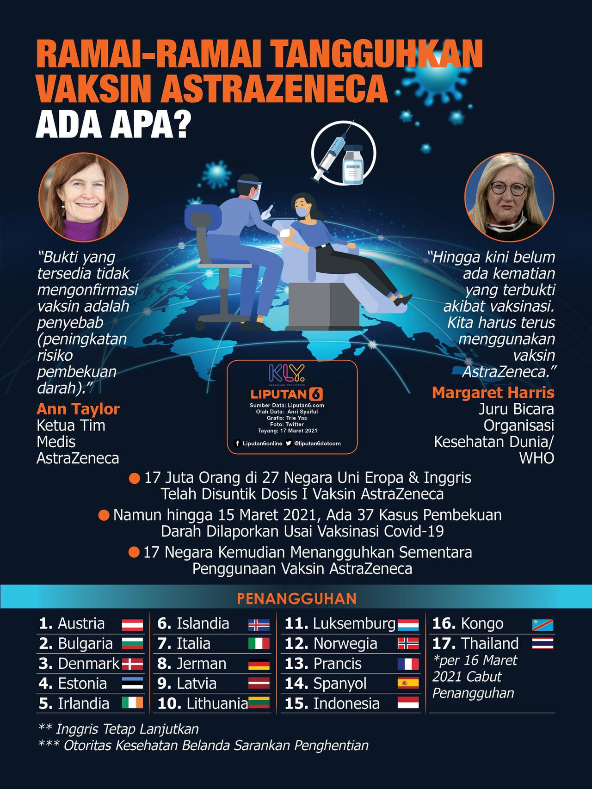

Hot News
WHO Tegaskan Vaksin COVID-19 AstraZeneca Aman Digunakan
Jenewa - WHO kembali menegaskan bahwa vaksin AstraZeneca masih aman untuk melawan COVID-19. Terkait kasus penggumpalan darah, WHO menyebut belum tentu itu terkait vaksin.
Tromboemboli adalah kejadian ketika terjadi penggumpalan darah. Kasus tersebut membuat pemakaian AstraZeneca dihentikan di Denmark, serta negara-negara Eropa lain.
"Vaksinasi melawan COVID-19 tidak akan mengurangi penyakit atau kematian dari sebab-sebab lain. Kejadian tromboemboli diketahui kerap terjadi. Tromboemboli vena adalah penyakit kardiovaskular yang paling umum nomor tiga di seluruh dunia," ujar pernyataan WHO, seperti dikutip Kamis (18/3/2021).
WHO berkata berkomunikasi secara reguler dengan BPOM Uni Eropa (European Medicines Agency) dan regulator di seluruh dunia terkait keamanan vaksin COVID-19.
Saat ini, komite vaksin WHO masih terus memeriksa data AstraZeneca. Begitu selesai, hasilnya akan langsung diumumkan ke publik.
"Pada saat ini, WHO menganggap bahwa benefit-benefit dari vaksin AstraZeneca masih melebihi risiko-risikonya, dan merekomendasikan vaksinasi dilanjutkan," tegas WHO.
** #IngatPesanIbu
Pakai Masker, Cuci Tangan Pakai Sabun, Jaga Jarak dan Hindari Kerumunan.
Selalu Jaga Kesehatan, Jangan Sampai Tertular dan Jaga Keluarga Kita.
Menkes Inggris Matt Hancock Pastikan Vaksin COVID-19 AstraZeneca Aman

Menteri Kesehatan Inggris memastikan bahwa vaksin COVID-19 produksi Oxford-AstraZeneca aman. Hal ini ia sampaikan usai sejumlah negara Eropa menangguhkan penggunaannya di tengah kekhawatiran atas pembekuan darah.
Matt Hancock mendesak orang-orang untuk "mendengarkan regulator" dan segera disuntik setelah mereka mendapat kesempatan tersebut.
Sekitar 13 negara telah menangguhkan penggunaan vaksin AstraZeneca sementara. Sampai akhirnya mendapat klarifikasi lebih lanjut tentang keamanannya.
Tetapi pengawas obat-obatan Inggris, MHRA, mengatakan bahwa bukti "tidak menunjukkan" suntikan itu menyebabkan pembekuan darah.
Sekitar 17 juta orang di seluruh UE dan Inggris telah menerima satu dosis vaksin, dengan kurang dari 40 kasus pembekuan darah yang dilaporkan hingga pekan lalu, kata pabrikan AstraZeneca.
Dikatakan jumlah kasus pembekuan darah yang dilaporkan lebih rendah dari ratusan kasus yang diperkirakan terjadi di masyarakat umum.
Dalam upaya untuk meyakinkan publik Inggris, Hancock menekankan bahwa MHRA, Organisasi Kesehatan Dunia, dan Badan Obat-obatan Eropa percaya bahwa vaksin itu aman.
"Kami terus meninjau efek dari vaksin ini sepanjang waktu dan kami tahu bahwa vaksin Oxford-AstraZeneca menyelamatkan nyawa di Inggris saat ini, jadi jika Anda mendapat panggilan, segera lakukan suntikan," katanya.
Infografis Vaksinasi COVID-19
sumber : Liputan6.com